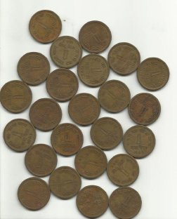
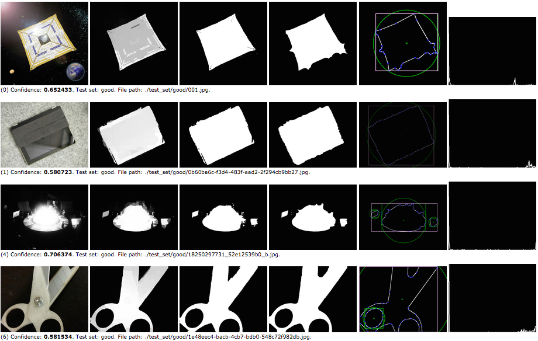

Tema 5- Procesamiento de imagen: Segmentación¶
En este tema veremos cómo segmentar imágenes, detectando los píxeles pertenecientes a los objetos de interés.
Umbralización¶
Como puede verse en este enlace, OpenCV proporciona varios métodos para realizar umbralización básica mediante la función threshold. Esta función también implementa la umbralización de Otsu indicando como parámetro cv.THRES_OTSU:
dst, th = cv.threshold(img, 0, 255, cv.THRESH_BINARY+cv.THRESH_OTSU)
La umbralización adaptativa se implementa usando la función adaptiveThreshold.
El método de Chow-Kaneko no está en OpenCV aunque no sería complicado de implementar.
Contornos¶
Tal como hemos visto en teoría, podemos usar un algoritmo de detección de bordes para poder estimar posteriormente los contornos de los objetos (y de esta forma segmentarlos). En OpenCV existe una función para realizar esta tarea llamada findContours que sólo puede usarse para extraer contornos a partir de los bordes detectados con otro algoritmo (es decir, trabaja con una imagen binaria como entrada). En este enlace puedes ver un ejemplo de un programa que usa findContours y posteriormente la función drawContours para dibujar el resultado usando colores aleatorios.


A continuación podemos ver un ejemplo de sintaxis de findContours:
contours, hierarchy = cv.findContours(image, cv.RETR_LIST, cv.CHAIN_APPROX_NONE)
Esta función devuelve una lista de contornos detectados en la imagen junto con su jerarquía. La jerarquía hace referencia a la relación de los contornos entre sí, ya que a veces tenemos unos contornos dentro de otros (en ese caso, los primeros serán "hijos" de los segundos, que son los contornos "padre").
El segundo parámetro de esta función es el tipo de algoritmo usado para devolver los contornos. El método más sencillo es cv.RETR_LIST, que devuelve simplemente un listado e ignora la jerarquía. Alternativamente se puede usar, por ejemplo, cv.RETR_TREE, que contiene la jerarquía completa.
El tercer parámetro es el método de aproximación. En el caso de usar cv.CHAIN_APPROX_NONE se devuelven todos los puntos del contorno, pero como esto es bastante ineficiente para algunos algoritmos (como veremos en el siguiente tema), a veces se usan técnicas de reducción de puntos para simplificar los contornos, por ejemplo usando la opción cv.CHAIN_APPROX_SIMPLE.
Crecimiento y división de regiones¶
OpenCV no tiene ningún método de crecimiento de regiones, aunque existen algunos ejemplos de código que lo implementan siguiendo la metodología que hemos visto en teoría. Tampoco existen métodos de división y unión, pero en este enlace puedes consultar un ejemplo sencillo.
Watershed¶
En OpenCV está implementado el algoritmo Watershed. Puedes ver ejemplos de uso de un programa interactivo y también no interactivo, es decir, deduciendo de forma automática los marcadores iniciales.
En el ejemplo no interactivo se segmenta la siguiente imagen:
 
En este otro enlace puedes encontrar un ejemplo de Watershed que usa la webcam en tiempo real.
Clustering¶
El algoritmo Mean-shift está implementado en la librería sklearn para uso general de clustering de datos, aunque también puede encontrarse en la librería de OpenCV.
La librería sklearn (en realidad
scikit) es la más usada en python para algoritmos de aprendizaje automático tradicional, y la utilizan muchos programas que también usan OpenCV.
En este último caso (usando OpenCV) tenemos dos opciones: El método meanshift, que suele usarse para tracking (como veremos en el tema de vídeo), o pyrMeanShiftFiltering, que se usa directamente para segmentar imágenes en color:
dst = cv.pyrMeanShiftFiltering(img, 25, 60)
En este caso, el segundo parámetro de la función (25) es el radio de la ventana espacial, y el segundo (60) el radio de la ventana de color. La segmentación de esta función es piramidal, es decir, se hace a distintas resoluciones y se combinan los resultados. A continuación se muestra una imagen de entrada y el resultado obtenido.


El algoritmo k-means se implementa en OpenCV mediante la función kmeans. En este enlace puedes ver un ejemplo de uso. Tal como hemos visto en teoría, a nivel práctico la principal diferencia con Mean-shift es que con k-means debemos indicar el número de clusters K, mientras que con mean-shift no podemos indicar la cantidad de elementos distintos que queremos encontrar.

Este algoritmo también puede encontrarse para uso general en la librería sklearn.
Métodos basados en grafos¶
El método basado en grafos más común en OpenCV es GrabCut. Puedes ver un ejemplo de esta función usada de forma interactiva en este enlace.

Métodos de saliency¶
OpenCV implementa algunos algoritmos de saliency, entre los que se encuentra Spectral Residual. Este algoritmo es sencillo y también se puede implementar a mano, pero a continuación puedes ver un ejemplo que usa la implementación de OpenCV basado en el código de este enlace:
import cv2 as cv
import argparse
import numpy as np
parser = argparse.ArgumentParser(description = 'Programa para calcular Meanshift')
parser.add_argument('--imagen', '-i', type=str, default='giraffe.jpg')
args = parser.parse_args()
# Cargamos la imagen
img = cv.imread(args.imagen)
# Comprobamos que la imagen se ha podido leer
if img is None:
print('Error al cargar la imagen')
quit()
# Calculamos el saliency map
saliency = cv.saliency.StaticSaliencySpectralResidual_create()
(success, saliencyMap) = saliency.computeSaliency(img)
# Convertimos el resultado (float32) a una imagen uint8
saliencyMap = (saliencyMap * 255).astype('uint8')
# Umbralizamos para obtener una imagen binaria
binaryMap = cv.threshold(saliencyMap, 0, 255, cv.THRESH_BINARY | cv.THRESH_OTSU)[1]
# Mostramos los resultados
cv.imshow('original', img)
cv.imshow('saliency', saliencyMap)
cv.imshow('binary', binaryMap)
cv.waitKey(0)


La mayoría de métodos recienten que estiman una función saliency suelen ser bastante más complejos y se basan en técnicas de aprendizaje automático. Si quieres ver un ejemplo de otro método puedes mirar el algoritmo GMR, que está basado en grafos (no usa aprendizaje automático).

Ejercicio¶
Como podemos ver en la siguiente imagen, tenemos un robot TrimBot y queremos usarlo para podar rosales:

El primer paso para que el robot haga su trabajo es detectar las ramas principales usando las cámaras que equipa. En este ejercicio vamos a intentar resolver esta tarea.
Para ello disponemos de una serie de imágenes sintéticas ya etiquetadas con la posición de las ramas principales. Por tanto, se trata de un problema de segmentación binaria: dada una imagen como la siguiente, el objetivo es identificar los píxeles que pertenecen a estas ramas (segunda imagen).
Si te fijas verás que las ramas muy finas no aparecen marcadas en la imagen segmentada ya que no son de interés para la poda. Sin embargo, ten en cuenta que aunque tu programa las detecte no hay problema y no cambiará mucho el resultado porque en realidad son pocos píxeles.
Llamaremos a nuestro programa roses.py. Debe recibir por parámetro la imagen de entrada y el fichero donde se almacenará el resultado de la segmentación:
parser = argparse.ArgumentParser(description = 'Programa para segmentar tallos de rosales')
parser.add_argument('--entrada', '-i', type=str)
parser.add_argument('--salida', '-o', type=str)
args = parser.parse_args()
entradaes la imagen de entrada.salidaes el nombre del fichero en el que vamos a guardar el resultado de la segmentación, que será una imagen en escala de grises (en blanco los píxeles que pertenecen a las ramas y en negro los que no).
Se proporciona el programa de evaluación y una serie de imágenes de entrada junto con sus correspondientes anotaciones para comprobar los resultados.
Para comenzar, descarga todos los materiales de este ejercicio que se encuentran en el fichero roses.zip.
Cuando descomprimas este archivo, podrás ver en el directorio roses las siguientes carpetas:
input: imágenes de entrada que debe segmentar tu algoritmo. Estas imágenes son un subconjunto sintético de la base de datos ROSeS.output: directorio inicialmente vacío donde se guardarán los resultados de segmentación de tu método.gt: imágenes correctamente etiquetadas para evaluar los resultados del programa.
En el directorio principal también hay un programa evaluate.py que se usará para evaluar los resultados. Este programa implementa una figura de mérito denominada intersección sobre la unión de dos imágenes (del inglés Intersection over Union, normalmente abreviado como IoU). En otras palabras, esta métrica devuelve cuánto se parece una imagen obtenida y una segmentada, siendo su rango posible [0,1] con el valor 1 representando una segmentación perfecta.
El script evaluate.py tiene dos modos de funcionamiento, según el argumento -m que se le facilite:
- Modo imagen individual: Modo que utilizaremos si queremos calcular la figura de mérito sobre una única imagen, la cual se especifica en el argumento
-i. Su sintaxis es:
python evaluate.py -m single -i input/imagen.png
- Modo batch: Modo que utilizaremos para evaluar una colección de imágenes contenidas en una carpeta (por defecto, la carpeta
input, aunque se puede cambiar utilizando el argumento-i). Su sintaxis es:
python evaluate.py -m batch [-i input]
Nótese que este programa requiere internamente el programa roses.py que hay que desarrollar en esta práctica (evaluate.py no únicamente calcula la métrica sino que también llama a roses.py para que se realice la segmentación). Por ello deberéis de implementar este programa para que el script de evaluación funcione.
Por último, cabe destacar que, para resolver este problema, puedes usar cualquier técnica que hayamos visto en la asignatura. Finalmente, la nota de este ejercicio será más alta cuanto mayor sea el valor de la Media IoU.